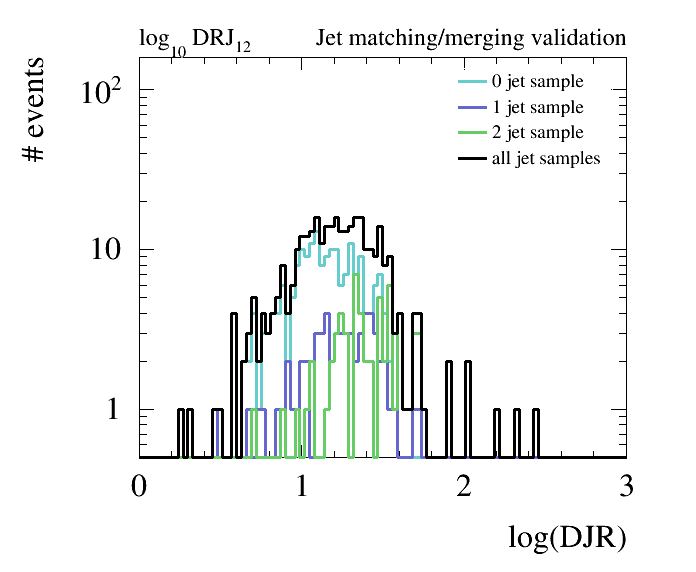
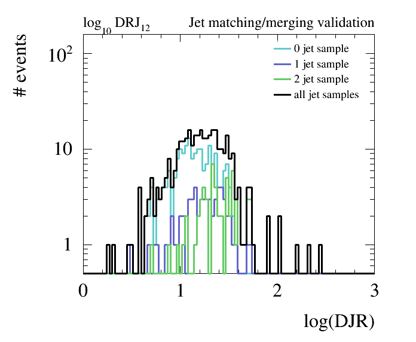

Pythia8 ME/PS validation
The Parton Shower (PS) Monte Carlo programs such as Pythia and Herwig describe parton radiation as successive parton emissions using Markov chain techniques based on Sudakov form factors. This description is formally correct only in the limit of soft and collinear emissions, but has been shown to give a good description of much data also relatively far away from this limit. However, for the production of hard and widely separated QCD radiation jets, this description breaks down due to the lack of subleading terms and interference. For that case, it is necessary to use the full tree-level amplitudes for the heavy particle production plus additional hard partons.
The aim of any parton-jets matching procedure is mainly to avoid overlapping between phase-space descriptions given by matrix-element generators and showering/hadronization softwares in multi-jets process simulation. The motivation for using both at the same time is the following: The Matrix Element (ME) description diverges as partons become soft or collinear, while the parton shower description breaks down when partons become hard and widely separated.
The matching procedure typically relies on the choice of one or several parameters (depending on the approach being used). A review of the available approaches in Pythia8 can be found here. This is not a lecture on merging, but rather a simple example to get you started.
An example on how to perform PS matching using the MLM approach is provided in
$FCCSW/Generation/data/Pythia_LHEinput_Matching.cmd. This Pythia8 configuration uses a previously generated
LHE files containing hard scattered 100 TeV Z+nJets events (with n =0,1,2).
Within FCCSW, run this example: ``` ./run fccrun.py Sim/SimDelphesInterface/options/PythiaDelphes_config.py –inputfile=Generation/data/Pythia_LHEinput_Matching.cmd –nevents=1000
To produce matching plots, fetch the [creatingMatchingPlots.py](https://github.com/HEP-FCC/fcc-physics/blob/master/pythia8/validation/createMatchingPlots.py) script in this repository,
and run it:
python createMatchingPlots.py fccOutput.root ```
 

Note that this example is simply for demonstration. Validation should be performed on at least 50k events.
The script will produce a bunch of canvas containing the differential jet rates. A few guidelines for understanding whether the matching procedure has been done correctly:
- the matched cross section (for X=0,1,2.. ) should be close to the unmatched cross-section for the 0-jets sample
- the matching scale qCut (in MLM matching) should be Q/6 < qCut < Q/3, where Q is the characteristic hard scale of the process
- the differential jet rate plots should be smooth (meaning that the full jet sample should display no large discontinuities)
- when qCut is varied the matched cross section should not vary too much